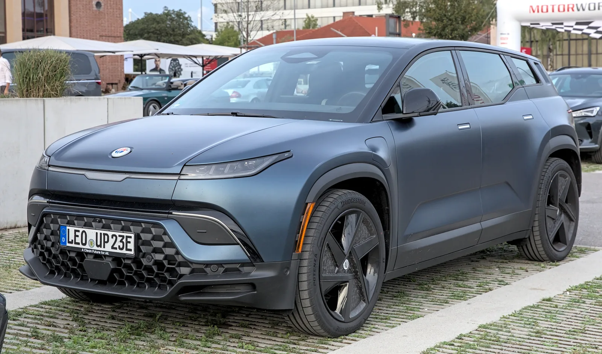
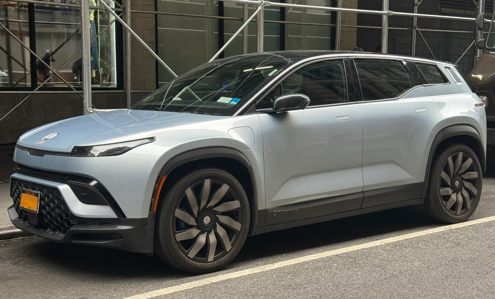
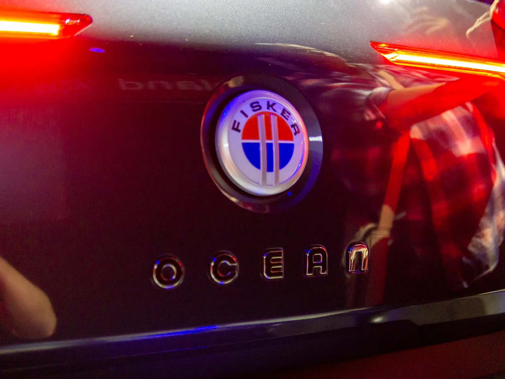
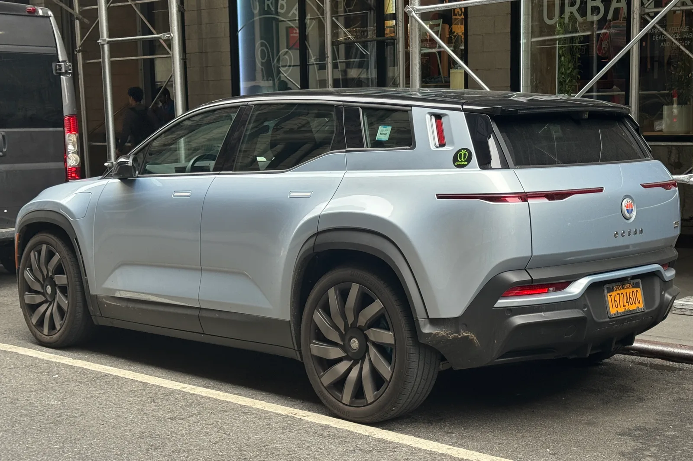

▲ 파산한 피스커의 오션 전기 SUV는 출시 3년 만에 중고 시세가 원가 대비 77%까지 떨어졌다 ⓒ Wikimedia Commons
1. 야심 찬 도전에서 파산까지, 피스커 오션의 몰락
미국 전기차 스타트업 피스커(Fisker Inc.)는 2023년 오션(Ocean) SUV를 야심 차게 출시했지만, 불과 2년도 지나지 않아 2024년 파산을 선언했다. CarBuzz 보도에 따르면 오션은 출시 초기부터 소프트웨어 버그와 하드웨어 결함으로 몸살을 앓았고, 내부 직원들의 증언에 따르면 여러 팀이 "끔찍한 아이디어"라고 경고했던 결정들이 경영진 주도로 그대로 강행되기도 했다. 결국 판매 부진이 누적되면서 회사는 약 1만 대 규모의 오션을 생산한 채 문을 닫았다. 스타트업 첫 양산 모델치고는 적지 않은 물량이었지만, 사후 지원 체계가 무너지면서 이 차들은 고스란히 소유자들의 부담으로 남게 됐다.

▲ 오션은 스포츠(3만 8,999달러)·울트라(5만 2,999달러)·익스트림(6만 8,999달러) 3개 트림으로 판매됐다 ⓒ Wikimedia Commons
2. 77% 감가율이 말해주는 것
CarBuzz가 확인한 최근 경매 사례에서 최고급 트림인 익스트림(원가 6만 8,999달러, 약 9,500만 원)이 단돈 1만 5,800달러(약 2,180만 원)에 낙찰됐다. 3년도 안 되는 기간에 가치의 77%가 사라진 셈이다. 시장 전반으로 봐도 오션의 중고 시세는 최저 약 1만 6,000달러에서 최고 약 3만 달러 사이에 형성돼 있고, 2023년형 오션 원 AWD의 평균 시세는 1만 8,855달러(약 2,600만 원) 수준으로 집계됐다. 일반적인 신차가 3년 뒤에도 원가의 40~50%는 유지하는 것과 비교하면, 오션의 감가는 이례적으로 가파르다.
📍 숫자로 보는 오션의 감가
익스트림 트림 기준 원가 6만 8,999달러 → 경매 낙찰가 1만 5,800달러(-77%). 동급 프리미엄 전기 SUV들이 3년 뒤에도 원가의 절반가량을 지키는 것과는 확연히 다른 흐름이다.
3. 왜 이렇게까지 떨어졌나 — 부품·AS 공백이라는 치명타
가격 폭락의 핵심 원인은 단순한 인기 하락이 아니라 '제조사가 사라졌다'는 사실 그 자체다. 피스커가 파산하면서 소프트웨어 업데이트, 공식 딜러 네트워크, 정비 서비스가 모두 끊겼다. CarBuzz는 오션 오너들이 자체적으로 협회를 꾸려 진단 장비 접근권을 확보하고, 직접 서비스 센터를 세워야 했던 사례를 전했다. 최신 고급 전기차일수록 소프트웨어 기반 기능이 많아 제조사 지원이 필수적인데, 오션은 그 지원이 통째로 사라진 것이다. 여기에 더해 경쟁 EV들의 기술이 빠르게 발전하면서 오션의 상품성은 실질적으로도 빠르게 뒤처졌다.

▲ 피스커 브랜드 자체가 사라지면서 소프트웨어 업데이트와 정비 인프라도 함께 끊겼다 ⓒ Wikimedia Commons
4. EV 스타트업 구매, 저가에 숨겨진 리스크
CarBuzz는 오션을 '중독된 거래(poisoned bargain)'로 표현했다. 낮은 가격만 보면 매력적이지만, 장기 소유 비용과 번거로움까지 감안하면 결코 저렴하지 않다는 뜻이다. 신생 EV 브랜드 차량 구매의 근본적인 리스크는 회사가 언제든 사업을 접을 수 있다는 데 있다. 제조사가 사라지면 배터리 관리 소프트웨어 업데이트, 순정 부품 수급, 리콜 대응까지 전부 끊긴다. 소비자 입장에서는 파격적으로 저렴해진 매물을 DIY 수리를 감수하고 '기술이 멈춘 차'로 받아들일 것인지, 아니면 아예 접근하지 않을 것인지 선택해야 하는 구조다.
5. 한국 소비자에게 주는 시사점
국내에서도 신생 브랜드의 전기차를 저렴한 가격에 들여오거나 병행수입하는 사례가 늘고 있는 만큼, 오션의 사례는 남의 일이 아니다. 차량을 살 때는 제조사의 재무 안정성과 국내 서비스망 존속 가능성을 함께 따져봐야 한다. 특히 소프트웨어 업데이트에 의존하는 최신 전기차일수록, 브랜드가 사라지면 중고 시세뿐 아니라 실사용 가치까지 함께 무너질 수 있다. 파격적인 저가 매물일수록 왜 저렴한지, 부품과 정비가 계속 가능한지를 먼저 확인하는 태도가 필요하다.

▲ 전문가들은 신생 EV 브랜드 구매 시 제조사의 재무 안정성부터 점검해야 한다고 조언한다 ⓒ Wikimedia Commons
이번 분석은 CarBuzz의 보도를 토대로 작성됐다. 원문 데이터와 인터뷰 내용은 아래 링크에서 직접 확인할 수 있다.